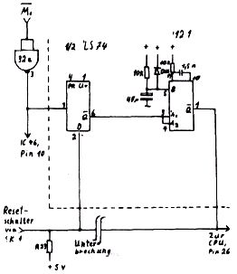

Nascom Journal |
5/80 |
Th. E. Schreiner
In der Programmsammlung „Merseyside Nascom Users Group“ habe ich folgende Fehler feststellen können:
Interpreter Pico Pilot:
– 0C9C > statt F2 52
– 0CA5 > statt 28 26
Peter Deege
___________ __
____ Aachen
Ein Ärgernis beim Nascom – jedenfalls bei meinen Exemplar – ist das unsaubre Reset-Verhalten. Meistens werden dabei einige Speicherzellen – auch die statischen – überschrieben. Um diesen Fehler, der das Austesten von Programmen äußerst mühsehlig macht, zu beheben, müssen drei Bedingungen erfüllt sein:
Meine Schaltung aus einem 74121 und einem 74LS74 – ein Flipflop bleibt frei – erfüllt die drei Bedingungen. Es werden invertierte M1-Signale benötigt, die man hinter IC 32a abgreifen kann. In der Nahe ist auch eine Stelle auf der Leiterplatte (hinter SK1), wo sich die zur CPU führende Reset-Bahn sehr schön unterbrechen läßt.
Die Möglichkeit, aus ASCII – Zeichen Graphik zu bilden, sind sehr begrenzt, u.a. wegen der großen Zeilenabstände beim Nascom. Mit einer Invertierung der Zeichen läßt sich wenigstens eine
| Seite 14 von 16 |
|---|